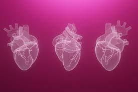

|
El científico Robert Jarvik desarrolló el primer prototipo del Jarvik-7, modelo que poseía grandes innovaciones como un material de recubrimiento interno que favorecía la adherencia de la sangre y el recubrimiento de sus paredes internas con tejido vivo, diseño que permitía establecer un flujo más natural de la sangre. Actualmente esta hecho de poliuretano en maquinas para la construcción de estos, aunque algunos son fabricados a base de tejidos humanos hechos en una impresora 3D |

|